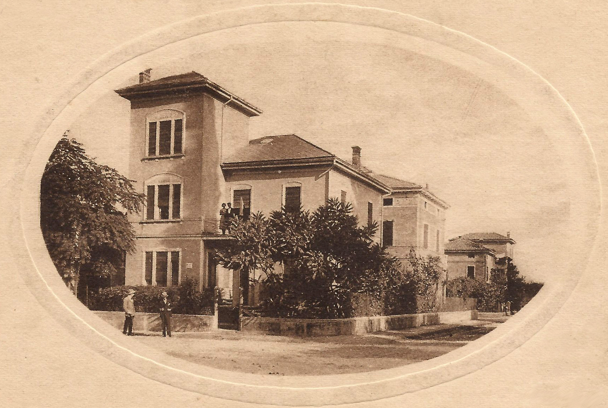

TAPPA 3: Via Trento 7
3.1 - Alessandro Leoni

A soli 100 metri più a sud di piazza 1° Maggio, all'angolo tra via Trento e viale della Rocca, si trova una villetta che venne requisita in quegli anni per farne la sede del Comando tedesco.
Il 18 marzo 1945 i partigiani cercarono di aiutare alcuni soldati mongoli, fatti prigionieri dai tedeschi e forzatamente aggregati alla Wehrmacht, che volevano disertare e unirsi alla Resistenza, ma qualcosa, forse una denuncia anonima, aveva messo in allarme il Comando. Ci fu una violenta reazione dei nazisti e lo scontro a fuoco causò la morte del più giovane partigiano scandianese caduto nella lotta di Liberazione: ALESSANDRO LEONI “Nessuno”, che aveva solo 17 anni, al quale verrà in seguito dedicato l’asilo nido di Scandiano, sito in via Cesari ad un centinaio di metri dal luogo della morte.
Nel medesimo scontro perse la vita anche il reggiano MARIO LASAGNI “Igli”.
Braccato dai tedeschi all'interno della villetta e rimasto senza munizioni, si uccise con l’ultimo colpo per non cadere nelle mani nemiche.
A Lasagni fu conferita la medaglia d’argento alla memoria con una motivazione che ne ricorda il doloroso destino: “Giovanissimo capo squadra partigiano, entrava nella Resistenza e intraprendeva la lotta armata in zona occupata dal nemico. Mentre si prodigava generosamente nel tentativo di liberare un gruppo di soldati stranieri disposti a battersi per la causa partigiana, ingaggiava impari lotta con una forte pattuglia nemica riuscendo a infliggere all'agguerrito avversario gravi perdite. Ferito gravemente continuava a battersi da prode, finchè, con l'ultimo colpo rimastogli, piuttosto che arrendersi, si toglieva la vita”.
Nel corso della stessa azione furono catturati anche i partigiani Gaspare Denti ed Emore Bertolani “Tarzan”. Denti, giovanissimo studente delle scuole superiori, conosceva un po' il tedesco, per questo prese a frequentare gruppi di soldati tedeschi nelle osterie del paese, al fine di carpire informazioni da riferire ai partigiani. Entrò anche in contatto con alcuni dei soldati mongoli e partecipò al tentativo di guidarli sulle colline per unirsi ai partigiani.
Incarcerato prima al comando tedesco di Albinea e poi al carcere dei Servi, subì torture e sevizie, al punto che la madre che lo cercava non lo riconobbe. Fu liberato, insieme ad altri prigionieri, dai partigiani pochi giorni prima del 25 aprile 1945. Fu eletto Sindaco di Scandiano negli anni ’60.
Il 18 marzo 1945 i partigiani cercarono di aiutare alcuni soldati mongoli, fatti prigionieri dai tedeschi e forzatamente aggregati alla Wehrmacht, che volevano disertare e unirsi alla Resistenza, ma qualcosa, forse una denuncia anonima, aveva messo in allarme il Comando. Ci fu una violenta reazione dei nazisti e lo scontro a fuoco causò la morte del più giovane partigiano scandianese caduto nella lotta di Liberazione: ALESSANDRO LEONI “Nessuno”, che aveva solo 17 anni, al quale verrà in seguito dedicato l’asilo nido di Scandiano, sito in via Cesari ad un centinaio di metri dal luogo della morte.
Nel medesimo scontro perse la vita anche il reggiano MARIO LASAGNI “Igli”.
Braccato dai tedeschi all'interno della villetta e rimasto senza munizioni, si uccise con l’ultimo colpo per non cadere nelle mani nemiche.
A Lasagni fu conferita la medaglia d’argento alla memoria con una motivazione che ne ricorda il doloroso destino: “Giovanissimo capo squadra partigiano, entrava nella Resistenza e intraprendeva la lotta armata in zona occupata dal nemico. Mentre si prodigava generosamente nel tentativo di liberare un gruppo di soldati stranieri disposti a battersi per la causa partigiana, ingaggiava impari lotta con una forte pattuglia nemica riuscendo a infliggere all'agguerrito avversario gravi perdite. Ferito gravemente continuava a battersi da prode, finchè, con l'ultimo colpo rimastogli, piuttosto che arrendersi, si toglieva la vita”.
Nel corso della stessa azione furono catturati anche i partigiani Gaspare Denti ed Emore Bertolani “Tarzan”. Denti, giovanissimo studente delle scuole superiori, conosceva un po' il tedesco, per questo prese a frequentare gruppi di soldati tedeschi nelle osterie del paese, al fine di carpire informazioni da riferire ai partigiani. Entrò anche in contatto con alcuni dei soldati mongoli e partecipò al tentativo di guidarli sulle colline per unirsi ai partigiani.
Incarcerato prima al comando tedesco di Albinea e poi al carcere dei Servi, subì torture e sevizie, al punto che la madre che lo cercava non lo riconobbe. Fu liberato, insieme ad altri prigionieri, dai partigiani pochi giorni prima del 25 aprile 1945. Fu eletto Sindaco di Scandiano negli anni ’60.